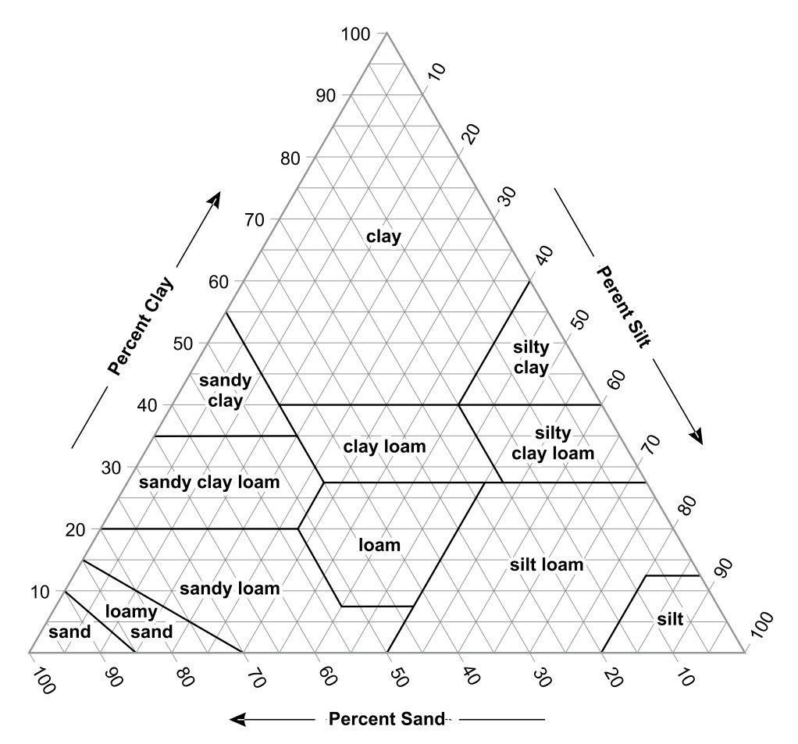

Using the soil texture triangle
The soil texture triangle plots the percentages of sand, silt, and clay in a soil sample to determine its texture class. Given any two of the three percentages, the third can be found by subtracting from 100%, and the texture class can be read from where those values intersect on the triangle.

Using the pH scale
The pH scale runs from 0 to 14, with plants often preferring a pH between 6.0 and 6.5.